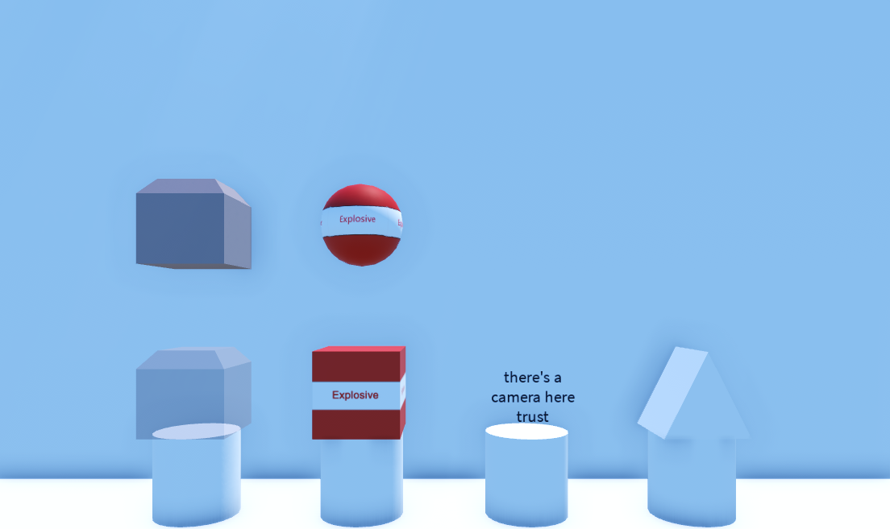

Armor blocks
Different blocks have different relative costs, hp and efficency

Different armors
For example tnt has a higher relative cost and lower efficency but more hp then compressors due to the fact they cant take damage from guns and instead let them pass by but have a low limited amount of 200 and cant expand like compressors.
Because of this and pushback (a topic that will be covered later) it'd make more sense to put a compressor a tnt block then a compressor half way into that tnt block rather then to do the same thing without compressing one partialy into the tnt.
| Block | Invincible | Visiblity | Efficency | Damageable by gun |
|---|---|---|---|---|
| Tnt | Yes | Yes | Average | Passed through (no) |
| Compressor | Yes | Optional | High | Yes with 5 hits |
| Camera | Yes | No | Average | Extremely low, bigger hitbox and one shot |
| Ghosted Cutter | Yes | No | Low | Yes (unknown) |